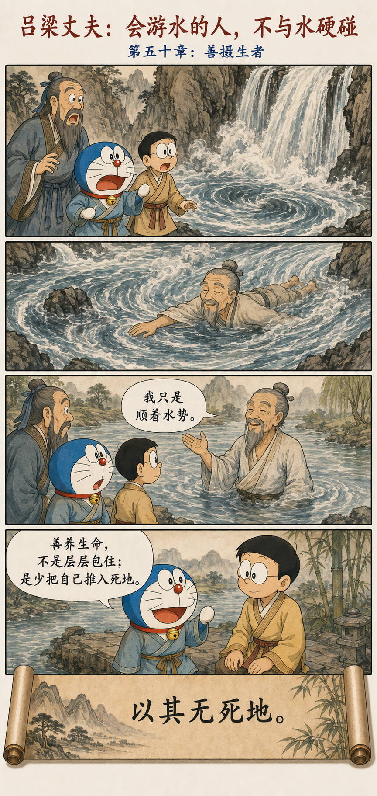

出生入死
Emerging into Life, Entering Death
出生入死。
生之徒十有三，死之徒十有三；
人之生，动之于死地，亦十有三。
夫何故？以其生生之厚。
盖闻善摄生者，陆行不遇兕虎，入军不被甲兵；
兕无所投其角，虎无所措其爪，兵无所容其刃。
夫何故？以其无死地。
We emerge into life and enter death. Some belong to life, some to death, and some move themselves from life onto fatal ground. Why? Because they pursue life too excessively. It is said that one skilled in caring for life meets no rhinoceros or tiger on the road and suffers no weapon in battle. Why? Because there is no fatal ground in which harm can take hold.
过度求生，也可能把人推向危险
The Excessive Pursuit of Life Can Create Danger
“生生之厚”不是珍惜生命本身，而是把保全、享受和延长生命推到过度。为了绝对安全而失去行动能力，为了长寿而被每一个指标吓住，为了享受而透支身体，都可能让“求生”反过来损害生活。
“Pursuing life too excessively” is not ordinary care for life. It is pushing preservation, enjoyment, and longevity beyond proportion. Absolute safety can eliminate agency; fear of every health metric can consume life; chasing pleasure can exhaust the body. The pursuit of life may turn against living.
“无死地”也不是神奇护身符。它更像一种风险智慧：不主动进入无谓的冲突，不用逞强证明自己，不把欲望包装成必要。危险没有被消灭，但能够伤害你的入口少了。
“No fatal ground” is not a magic shield. It is a form of risk intelligence: do not enter pointless conflict, prove yourself through bravado, or disguise desire as necessity. Danger does not vanish, but it has fewer openings through which to reach you.
吕梁丈夫：会游水的人，不与水硬碰
The Swimmer of Lüliang: Do Not Fight the Water

《庄子·达生》写孔子在吕梁看见瀑布急流，以为鱼鳖也难以游过，却有一位丈夫在水中出没，最后披着头发唱歌而出。孔子问他是否有特别的方法，他说自己顺着旋涡进入，随着水势出来。
In Zhuangzi’s “Understanding Life,” Confucius sees the violent water at Lüliang, seemingly too rough even for fish, yet a man swims through and emerges singing. Asked for his method, the swimmer explains that he enters with the vortex and comes out with the current.
这不是鼓励冒险，而是说明熟悉环境、尊重结构，往往比用更大力气对抗更安全。善摄生不等于躲开一切水，而是知道怎样进入、何时退出，以及哪些水根本不必下。
This is not an invitation to take risks. It shows that familiarity with conditions and respect for structure can be safer than greater force. Caring for life does not mean avoiding all water; it means knowing how to enter, when to leave, and which waters need not be entered at all.
谨慎不是退缩，勇敢也不是暴露风险
Caution Is Not Retreat, and Courage Is Not Exposure
老子并不保证懂道的人不会遇到事故，也没有否定医疗、训练和保护。真正的问题是：我们是在降低可避免的风险，还是因恐惧而取消生活；是在承担值得的风险，还是为了面子进入死地？
Laozi does not promise immunity from accidents, nor reject medicine, training, or protection. The question is whether we reduce avoidable risk or cancel life out of fear, and whether we accept worthwhile risk or enter fatal ground merely for pride.
好的保护，最后应当让生命更能行动
Good Protection Should Leave Life More Able to Act
不拿过度保护代替生活，
也不拿逞强代替勇气。
Do not replace life with overprotection, or courage with bravado.
原典与故事出处
Primary Texts and Story Sources